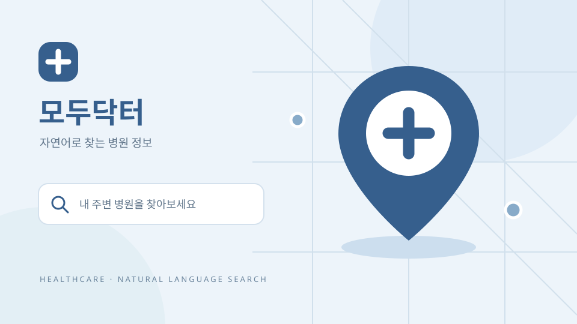

모두닥터
주변 병원을 지도에서 찾고, 방문 조건을 대화로 정리하는 병원 탐색 도우미
담당기획 · 병원 데이터 적재 · 지도 검색 및 채팅 개발
서비스 · 링크 미등록
GitHub · 링크 미등록

상황
2026년 9월 기준 공공데이터에는 의료기관 79,899곳의 기본정보가 담겨 있었습니다. 사용자가 갈 수 있는 병원을 고르려면 이 자료에서 자신의 위치와 검색 반경에 맞는 후보를 찾을 수 있어야 했습니다.
과제
개인 프로젝트로 병원 데이터를 적재하고, 사용자가 현재 위치나 지도에서 고른 위치를 기준으로 주변 병원을 거리순으로 조회하는 기능을 맡았습니다.
실행
- 공공데이터 적재. 병원명, 주소, 좌표 등 기본정보 16개 항목을 검증하고, 기관 식별자를 기준으로 PostgreSQL에 저장하거나 갱신하도록 구현했습니다.
- 지도 검색과 페이지 조회. 직접 작성한 거리 계산식을 GeoDjango의 반경 검색과 PostgreSQL 공간 인덱스로 바꿨습니다. 목록과 전체 건수를 따로 조회하던 방식을 window function으로 합쳐 거리순 목록과 전체 건수를 한 번에 가져오도록 했습니다.
- 채팅 안내. LangGraph로 사용자가 지역과 진료 목적을 대화에서 정리할 수 있도록 구현했습니다. 채팅에서 병원 데이터를 직접 조회하는 기능은 후속 과제입니다.
결과
원본에서 위치 좌표가 유효한 79,891곳을 지도 검색 대상으로 삼았습니다. 요청한 페이지에는 가까운 순으로 최대 20곳이 표시됩니다. 검색 결과가 있는 경우 목록과 전체 건수를 가져오는 데이터베이스 조회를 2회에서 1회로 줄였습니다.
공공데이터 출처
건강보험심사평가원_전국 병의원 및 약국 현황 (새 탭)
- 제공기관
- 건강보험심사평가원
- 배포
- 공공데이터포털
- 활용 자료
- 병원정보서비스 ·